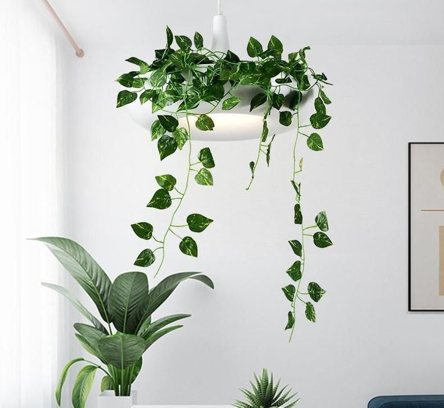
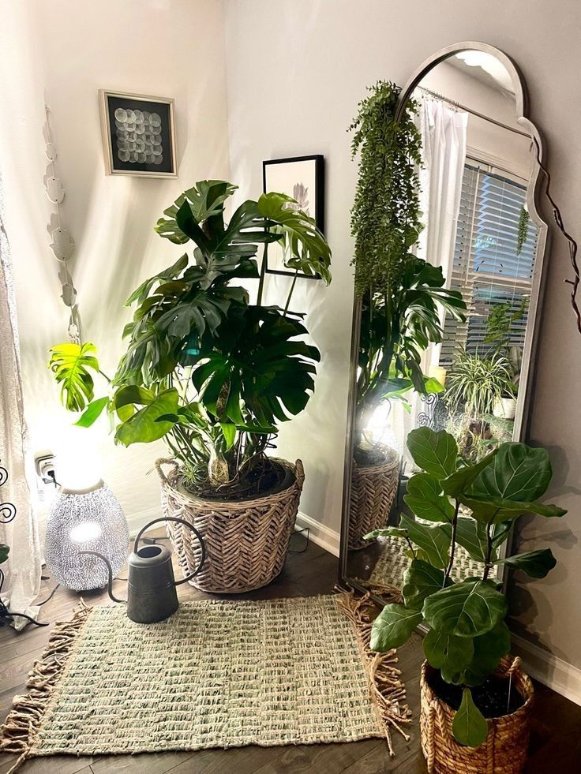
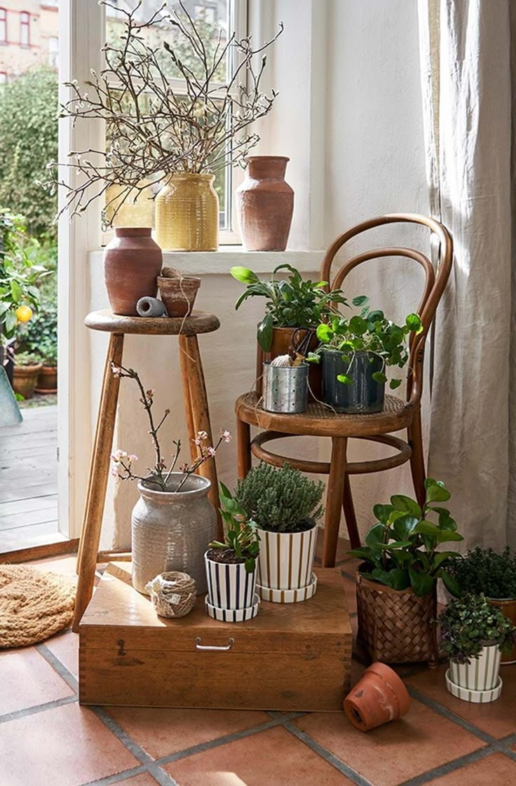

🪟 인테리어

좁은 공간에는 행잉 플랜트를
사용하거나 식물을 벽에 걸고,
키가 큰 식물을 활용하여 시선이 위로 분산됨에 따라 공간이
넓어보이게할 수 있습니다.

고무나무, 극락조, 벤자민과
같이 큰 식물은 공간의
느낌을 바꿔줍니다.
작은 다육식물이나 행잉 플랜트 같이 작은 화분은 공간의
포인트로 눈길을 끌 수 있습니다.

각 공간과 어우러지는 화분을
사용하여 공간의 통일감을 주며, 동시에 식물로 인한 자연친화적 인테리어 효과를 낼 수 있습니다.

스툴이나 스탠드를 사용하여
식물과 식물간의 높낮이를
조절하여 층을 만들면
시선이 자연스럽게 위에서 아래로 내려와 공간을 더욱 입체적으로 느끼게 할 수 있습니다.